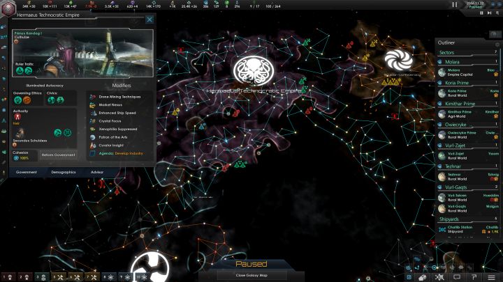

Video games have been a very large part of my life. I have both been playing them, and wanting to make them for as long as I can remember. While many have a favorite game that they can easily pick out from memory, I have a long list of games I really enjoy, making it easier to have a list of favorite games by genre. I have many games that I have grown to love over the years, and I have realized as I have gotten older that I appreciate different things from games than I did when I was younger. The easiest example of how my tastes have changed is how much of an appreciation I have for the story in games. While I generally have always preferred to play games alone, it has only been in the last few years that I have come to appreciate narratively deep and complex stories with characters to adore, and exploring these stories can be quite amazing. And while I have to many games to count that I hold dearly in my heart, this is a short list of some of my favorite games, and games genres.
| RPG | Mass Effect | Knights of the Old Republic |
|---|---|---|
| Sandbox | Terraria | Spore |
| 4X | Stellaris | Masters of Orion II |
RPG
What do I mean by RPG? RPG stands for Role Playing Game, put simply is a video game about an adventure with a character that you control, in which you often explore a universe full of characters and locations to discover. But RPG's also refer to the game mechanics associated with the genre. Such as mechanics relating to mechanics revolving around improving your character through playing the game. But RPG can also be more broadly applied to story based games that do not necessarily involve complex game mechanics and systems. As stated previously, I have grown to really appreciate the value of story telling in games, but I have long enjoyed RPG's, even though I did not understand the stories, at least not until I had grown older. These are 3 of my favorite RPG game franchises out there. Though there are many other great games that would fall under this broad genre.
Mass Effect
Probably one of the first RPG franchises that I ever fell in love with, is the mass effect franchise. I have easily spent hundreds of hours in the first 3 games, and I have probably beat the first game over 10 times. To say that I hold these games dear and close to my heart would be an understatement. The first Mass Effect game was released over a decade ago, back in 2007. The first Mass Effect game may be a little rough around the edges now, but back then the game was incredible. I still prefer ME1 over the other games in the trilogy, as I feel it has some of the strongest story elements and this is a game that captured my imagination quite like no other. The Mass Effect universe is set in a science fiction universe, in which the discovery of ancient alien technology propelled mankind into an already established galaxy full of other sentient alien life all with their own cultures, histories, and motivations. You play as the veteran soldier commander Shepard. The story takes you across the galaxy in a quest to quell an impending invasion from a race of machines bent on cleansing the galaxy of life, but until they actually invade in the 3rd game, Shepard's warnings largely fall on deaf ears. While I cannot gush about the original trilogy enough, I unfortunately cannot say the same for the latest game in the franchise. Mass Effect Andromeda. The studio behind the game, Bioware, has been on a downward spiral in the past few years resulting from grueling overtime, and woeful mismanagement by the studio leadership. Resulting in a disappointing game at best. Go to Kotaku article for more information.
Star Wars Knights of the Old Republic
While Star Wars Knights of the Old Republic is quite an aged game, it remains as arguably one of the best RPG's in gaming history, as well as one of the best Star Wars games out there. While it has aged poorly in terms of graphics and game play, it still has an incredibly well told story. The game mechanics are simplistic and based on d20 games (like DND). This has led to the mechanics aging poorly in their very simplistic design, which is basic compared to modern games. This game is set in the Star Wars universe, but the events in this game happen long before the events of the movies we know and love. This game has you playing a character who has lost their memories, and finds themselves waking up in the middle of an galactic conquest between the Republic and the Sith. You are thrust into the middle of the conflict, where you witness firsthand the brutality of the Sith, who completely destroy the planet you escaped to through orbital bombardment, in an attempt to prevent your ally, a Jedi named Bastila from escaping. Knights of the Old Republic, also contains one of the best plot twists in gaming history, of which I won't spoil. But this is one of many reasons why this game has acquired such popularity.
Sandbox
The term, sandbox, as genre's go, is pretty open ended in what that can entail. But in general, it means games that don't necessarily have a story involved, and are more focused on allowing the player to explore and often build their own experiences. Meaning these games are often as open ended in the things they allow for players to do, in the same way the genre is left open to interpretation. But the reason for my enjoyment in these games is fairly simple. I enjoy the open ended game play these games provide. Offering hours upon hours of fun, these games often are great for the expression of creativity. A popular game that I would say falls under this category would be Minecraft. But these are some of my favorite open ended games, that I have probably invested more time in than I should have.
Terraria
Terraria is one of my favorite games, that I have enjoyed for years. Terraria is a game about exploring a vast 2D world, and gathering treasure to upgrade your character. Or by mining minerals to craft more advanced equipment. The game is extreamly fun to explore with its vast amounts of loot to find, and the creative freedom it offers with its building system, allowing you to build structures as elaborate as you can imagine. It is also very rewarding to be able to take on the bosses throughout the game, and to see how far you have come with your character when bosses that once gave your character nightmares become total pushovers. Terraria is also a game who's developers have gone above and beyond. Even after their initial release of the game, they have dramatically expanded upon the game since then. The game looks very different today, and all for the better.
Spore
I feel that Spore is a hidden gem of a game, that unfortunately has been lost to the wayside, as the original development, Maxis, studio was close by Electronic Arts several years ago. Kotaku Article for more information. Spore is a cartoonish game about creating your own species on an alien world, starting with a simple cell, and evolving them until they become a fully fledged civilization. With the traits you give them affecting their development in later stages of the game. Eventually your little species takes to the stars, where you become a galactic civilization. While I love this game, and have invested a couple hundred hours into it, I am sad that the game can never be improved upon. The game was an ambitious concept to be sure, but many of the game mechanics surrounding the various stages of your species are extremely simplistic. With the early social and diplomatic routes of the game really just boiling down to a digital version of Simon says, and the more aggressive routes resulting in just simply finding all the best weapons to attach to your creature. But the game still holds so much creative freedom to design your own species the way you want it to be designed. Resulting in some really outlandish creatures, which would not work so well in reality.
4X
While 4X games are not as well known as other game genres, it is by far my favorite genre in gaming. I have probably invested more time into these games over any other genre of games, other than perhaps RPG's. 4X games generally are complex games revolving around the creation of civilizations and empires across time and space (depending on the setting). Probably some of the most commonly known 4X games, are games such as Sid Meier's Civilization. 4X games are known for their complex game mechanics, and the vast amounts of information that you as a player must keep track of. But I find these games to be very deep, and incredibly fun for me. And while these are a few of my favorite games in the genre, I have many more favorites that fall into this category that I have sunk many hours in.
Stellaris
Stellaris is one of the most recent 4X games that I have fallen in love with. Stellaris is a science fiction 4X game that offers some of the best game mechanics, and explorations of the genre that I have seen in some time, and unlike many games of the genre, is played in real time, which I have grown to really appreciate. As my biggest gripe with the turn based ones is simply the time investment required to complete a single game. Stellaris offers one of the best species creation system I have seen in a 4X game. While you can yes, determine their appearance based on a number of premade designs, you can also choose everything from your homeworld, your government system, and political culture, to the names of your starships and leaders, and your home system. My favorite aspect of the game is the political systems, most 4X games simply allow you to choose a government system, such as democracy, dictatorship, monarchy, etc. Stellaris takes it a step further, by including a system of political ethics, which grant bonuses to your empire, but also have a large effect on how you run your empire, as well as how you are viewed, and interacted with by other species. One of the best additions from content added to the game after release is the addition of being able to play as hive minds and machine intelligences. I love being able to play as a race of sentient machines ruled over by a machine overlord, and the political system allows you to decided to be a race of murder machines, or a race of benevolent machines who work as caretakers of organic life. Showcasing the open ended nature of the game, and major reason for why I have like this game so much.
Masters of Orion II
Masters of Orion 2 is one of the first 4X games I have ever played. It was released a very long time ago, and it was first introduced to me by my father. Other games have been released in the franchise, none are as good as this one. Masters of Orion II is another science fiction game about creating a space fairing empire. But this is one of the earliest games to do so. And while the graphics are very old now, the game is still very fun to play. My favorite aspect from this game is the ship design system, and the combat system. Though the biggest weakness of this game is how easy it was to exploit the race designer to make a invincible species. This is the game that got me interested in the genre. It is certainly a game that helped to shape the genre into what it is today. With many of the systems they designed becoming the standard.